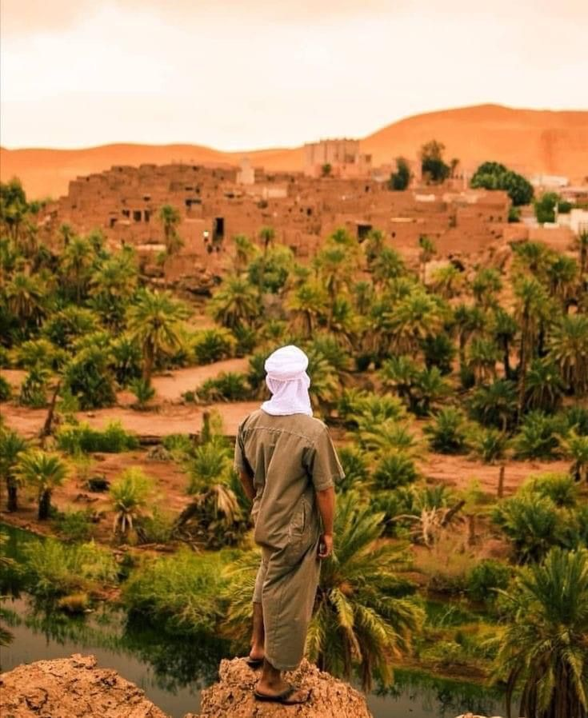
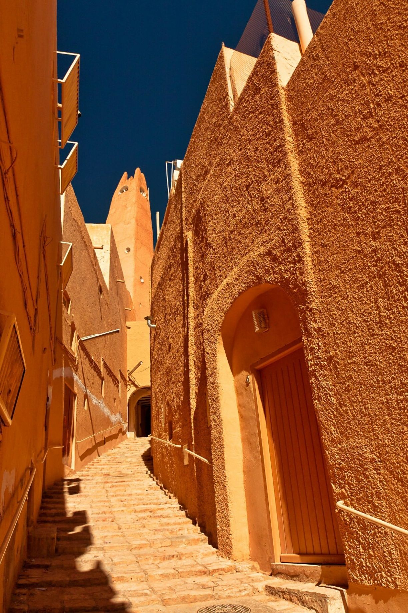

La ville de Djanet est entourée par des paysages désertiques spectaculaires, avec des dunes de sable doré s'étendant à perte de vue. Les formations rocheuses uniques et les massifs montagneux imposants ajoutent à la grandeur du paysage. Cette région est souvent appelée "le pays des merveilles" en raison de ses formations rocheuses érodées par le temps, qui prennent des formes extraordinaires et fascinantes. Djanet est également connue pour ses peintures rupestres préhistoriques, témoignages des anciennes civilisations qui ont habité la région il y a des milliers d'années.
Taghit est une destination touristique située, plus précisément dans la wilaya de Béchar, L'une des caractéristiques les plus remarquables de Taghit est ses dunes de sable spectaculaires. Les dunes s'étendent à perte de vue, offrant des panoramas à couper le souffle. Les voyageurs ont la possibilité de faire des promenades à dos de dromadaire dans les dunes, ce qui est une expérience inoubliable. offre également la possibilité d'explorer des oasis verdoyantes. Les palmiers et les jardins luxuriants contrastent avec le paysage désertique et créent un contraste saisissant.
Tamanrasset est souvent considérée comme la porte d'entrée vers le désert du Sahara algérien et attire de nombreux touristes et aventuriers en quête d'expériences uniques. La région offre des paysages désertiques époustouflants avec ses dunes de sable, ses montagnes majestueuses, ses oasis verdoyantes et ses formations rocheuses impressionnantes. La culture touarègue est très présente à Tamanrasset, et les habitants sont principalement des Touaregs, un peuple nomade qui a su préserver ses traditions ancestrales malgré l'évolution du monde moderne.
La ville de Ghardaïa est célèbre pour son architecture unique et sa culture berbère. Elle est principalement habitée par la tribu berbère des Mozabites, qui ont créé un système de villes fortifiées appelé "ksour". Ces ksour sont des ensembles de maisons en forme de cubes, construites en terre cuite et reliées entre elles par des ruelles étroites et sinueuses. Chaque ksar est entouré de murs épais pour se protéger des tempêtes de sable et des invasions. L'économie de Ghardaïa repose principalement sur l'agriculture, en particulier la culture des palmiers dattiers et la production d'huile d'olive. L'artisanat local est également très développé, avec des produits tels que les tapis, les poteries et les bijoux traditionnels.
